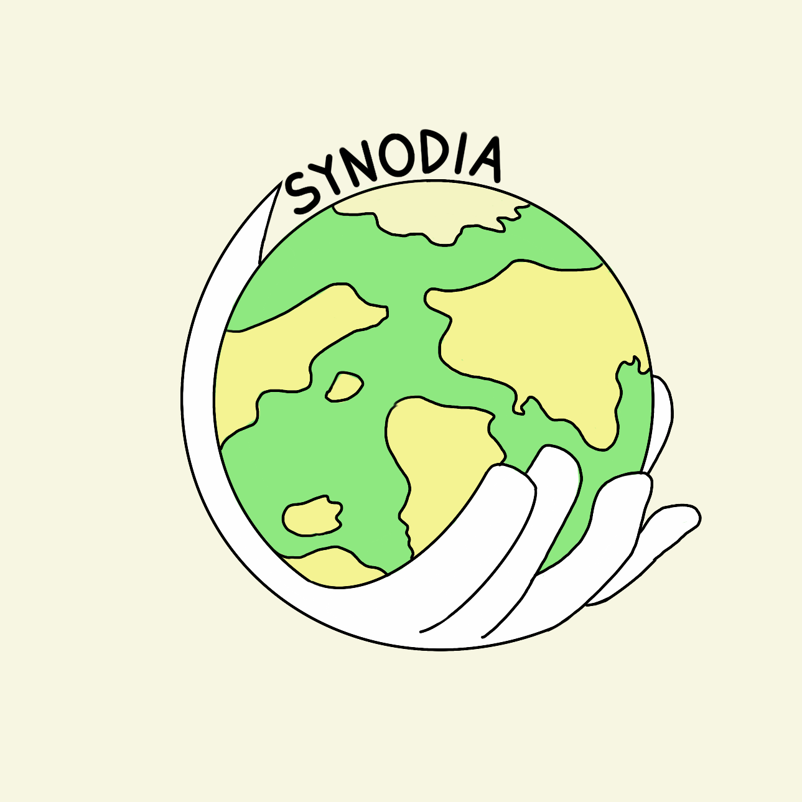

올해 활동을 여러분에게 맞춤 설계하기 위한 조사입니다.고1 때와 달라진 점이 있다면 현재 기준으로 답변해 주세요.솔직하게 작성할수록 더 좋은 활동을 만들 수 있습니다.
* 표시는 필수 질문입니다.
1.현재 가장 관심 있는 진로 분야를 모두 선택해 주세요.*
복수 선택 가능
2.고1 때와 비교하여 희망 진로가 달라졌나요?*
3.달라졌거나 구체화되었다면, 어떤 계기가 있었나요?
수업, 독서, 개인 경험 등 자유롭게 적어 주세요.
4.올해 관심 있는 국제 이슈 키워드를 3개 적어 주세요.*
예: AI 규제, 기후 난민, 미중 반도체 갈등, 우크라이나 전쟁, 글로벌 식량 위기, K-콘텐츠 수출 등
5.특별히 관심 있는 국가 또는 지역이 있나요?
예: 미국, 유럽, 동남아시아, 중동 등
6.본인의 성격/활동 성향에 가장 가까운 것을 골라 주세요.*
7.본인의 영어 읽기 수준은 어느 정도라고 생각하나요?*
8.평소 뉴스를 접하는 경로는?*
9.영어 원문을 읽을 때 이해가 안 되는 부분은 어디서 도움을 받나요?*
10.본인이 자신 있는 역량을 모두 골라 주세요.*
11.올해 동아리를 통해 키우고 싶은 역량은?*
3월 ~ 5월
12.미디어 비교 분석에서 가장 다루고 싶은 뉴스 주제 분야를 순서대로 3개 골라 주세요.*
1순위가 가장 다루고 싶은 분야입니다.
13.독서 토론에서 읽고 싶은 도서 유형은?*
14.추천 도서나 다루고 싶은 구체적 주제가 있다면 적어 주세요.
예: '총, 균, 쇠' — 문명 발전의 불평등 원인이 궁금합니다 / 영어 원서로 된 기후변화 관련 도서에 도전해 보고 싶습니다 / 특정 책은 없지만 국제 무역 분쟁에 관한 책을 읽어보고 싶습니다
6월 ~ 7월
15.영어 기사 읽기 시 희망하는 난이도는?*
16.개인 탐구 프로젝트에서 다루고 싶은 주제 또는 질문이 있나요?*
17.탐구 결과물로 만들어 보고 싶은 형태는?*
18.개인 탐구를 진행할 때 가장 어려울 것 같은 부분은?*
9월 ~ 10월
19.시뮬레이션에서 맡아보고 싶은 역할을 순서대로 골라 주세요.*
1순위가 가장 하고 싶은 역할입니다.
20.대변하고 싶은 국가 또는 매체가 있나요?
예: 미국 CNN, 카타르 알자지라, 일본 NHK, 영국 BBC, 중국 CGTN, 프랑스 르몽드 등. 평소 관심 있는 나라나 진로와 연결되는 지역의 매체를 고르면 됩니다.
21.시뮬레이션 의제로 다뤘으면 하는 국제 이슈가 있다면 적어 주세요.
나라마다 입장이 갈리는 이슈일수록 좋습니다. 예: AI 군사 무기 규제, 기후변화 대응 책임 분담, 글로벌 난민 수용 정책 등
11월 ~ 12월
22.발표 경험이 있나요?*
수업·대회·동아리 등 모두 포함
23.학술제 팀 구성 시 선호하는 방식은?*
24.학술제에서 본인이 맡고 싶은 역할은?*
25.선호하는 활동 방식은?*
26.팀 활동과 개인 활동 비율 선호는?*
27.동아리 활동을 생활기록부(세특)에 연결하고 싶은 과목이 있나요?
예: 영어 — 영어 기사 분석 활동을 연결하고 싶습니다 / 사회·문화 — 국제 사회 불평등 관련 탐구를 연결하고 싶습니다 / 정치와 법, 통합과학 등
28.올해 동아리 활동에서 가장 기대하는 것과 걱정되는 것을 하나씩 적어 주세요.*
예: 기대 — 다국적 보도 시뮬레이션이 재미있을 것 같습니다 / 걱정 — 학업과 동아리 활동 병행이 걱정됩니다
기대하는 것
걱정되는 것
29.기타 건의 사항이나 하고 싶은 말이 있다면 자유롭게 적어 주세요.
예: 활동 자료를 미리 공유해 주시면 좋겠습니다 / 외부 강연이나 대학생 멘토링도 해보고 싶습니다
아래 내용을 복사하여 부장에게 전달해 주세요.